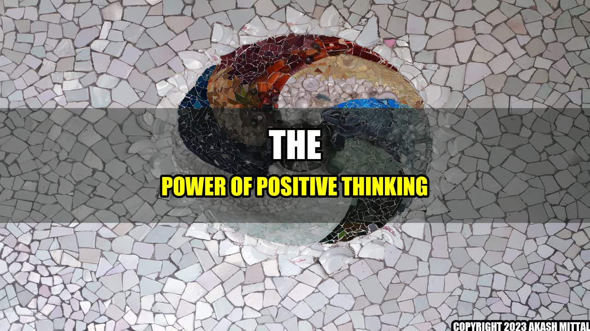

The Power of Positive Thinking

Have you ever noticed that some people seem to attract success and happiness, while others constantly suffer from setbacks and negative experiences?
It turns out that our thoughts and beliefs play a major role in shaping our reality. By focusing on positive thoughts and visualizing success, we can help create a more positive future.
The Science Behind Positive Thinking
Studies have shown that positive thinking can improve our physical health, mental well-being, and overall quality of life. When we focus on positive thoughts, we release chemicals like dopamine, serotonin, and oxytocin that create feelings of happiness, joy, and satisfaction. These chemicals also strengthen our immune system, reduce stress and anxiety, and improve our cognitive function.
Concrete Examples of Positive Thinking
Here are some examples of how positive thinking can impact our lives:
- A job seeker who visualizes themselves in the ideal job they want is more likely to find success in their job search.
- An athlete who imagines themselves winning the race is more likely to perform better and actually win.
- A student who believes they can do well on the exam tends to study harder and perform better than a student who doubts their abilities.
- A person who focuses on the good things in life, rather than dwelling on the negative, tends to feel happier and more content.
How to Cultivate Positive Thinking
Here are three ways to cultivate a positive mindset:
- Practice gratitude. Take time each day to reflect on the good things in your life, no matter how small they may seem. This can help shift your focus away from negativity and towards positivity.
- Visualize success. Use your imagination to picture yourself achieving your goals and living your ideal life. Imagine how it would feel to experience success and use that feeling as motivation.
- Avoid negative self-talk. Be mindful of your thoughts and try to reframe negative self-talk into positive affirmations. For example, instead of saying "I can't do this," say "I am capable and strong."
Learn More About the Power of Positive Thinking
Conclusion
Positive thinking can have a profound impact on our lives, helping to improve our physical and mental health, our relationships, and our overall quality of life. By cultivating a positive mindset through practices like gratitude and visualization, we can create a more fulfilling and joyful life.
Social
Share on Twitter Share on LinkedIn